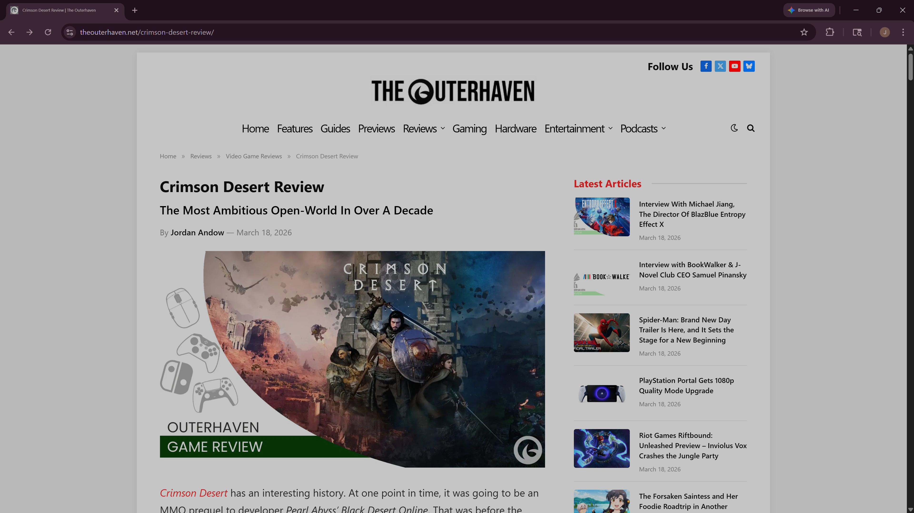
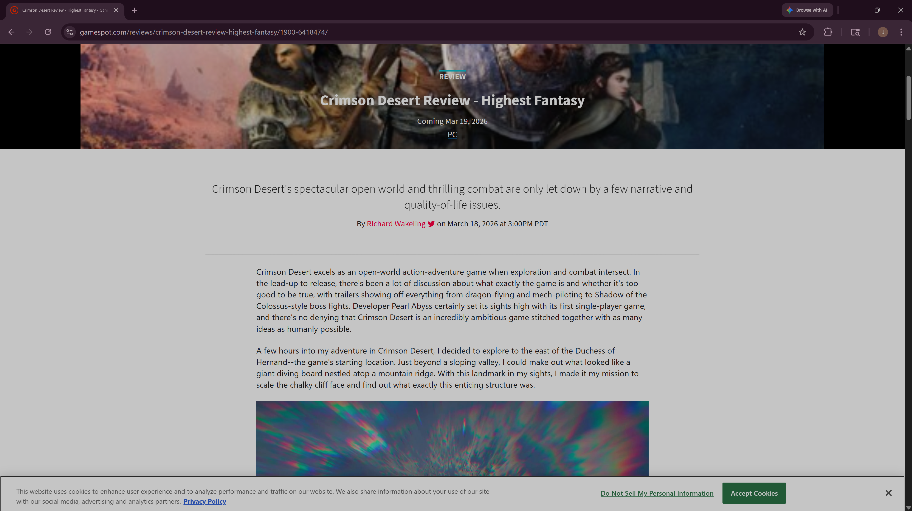

Typography Article
typography article
Typography Comparison
Both reviews selected for this comparison are centered around the same topic: an upcoming video game. This shared focus allows for a straightforward evaluation of the differences in style and layout between the two reviews, as any variations can be attributed solely to their presentation rather than content.
The Outerhaven Review Presentation The Outerhaven review distinguishes itself through its use of a bold font, which immediately draws attention and gives the page a visually striking quality. The review also features well-placed white space around the content, contributing to an organized and clean layout. This approach ensures that the review is easy to read and navigate, ultimately enhancing the overall readability and user experience for the audience.Crimson Desert Review - The Outer Haven

Alternative Review Presentation
By contrast, the other article presents a less effective design. Its overall appearance is messy and feels insubstantial. Instead of creating clarity, the use of whitespace adds to the sense of clutter on the page. The font appears too thin, which detracts from readability. Additionally, the paragraph structure resembles a continuous block of textbook text without clear break points, making it difficult for the reader to maintain their place. The left-to-right layout does little to guide the eyes or provide relief within the text, resulting in a challenging reading experience.Crimson Desert Review - GameSpot
